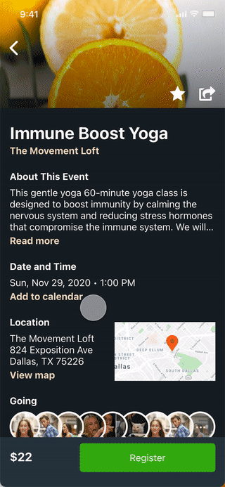
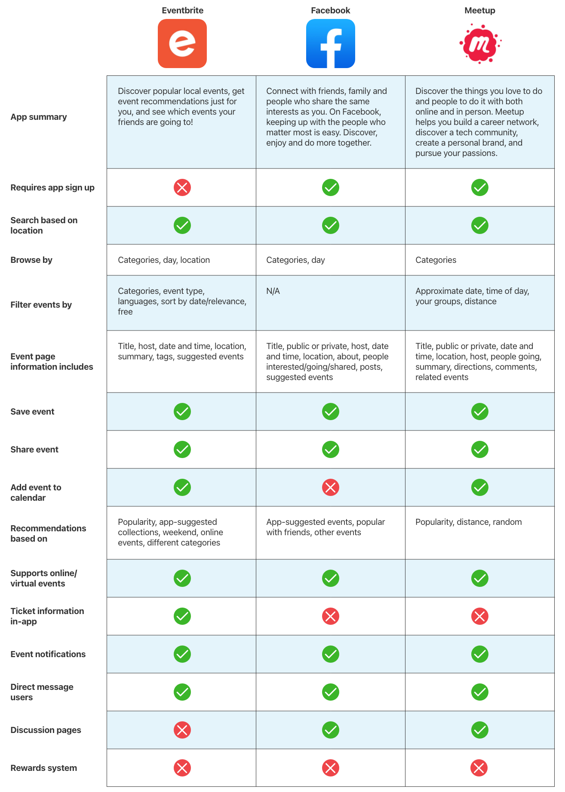

Moving to a new town can be jarring, especially if you don’t know anyone there. With Evening Coffee, people can find interesting events to meet new friends and become motivated to do activities in-person.
Problem
The company’s location data shows that, on average, 80% of people who mark they are "going" to an event end up not attending at all.
Solution
Entice people to go to events by creating a loyalty system that rewards users with points for each event attended, which can then be redeemed for discounts. This will attract users to actually attend events more to increase the conversion of accepted event invites.
Role
Sole UI/UX Designer and Researcher. This project is part of the Springboard curriculum I am currently taking.
Duration
Nov - Dec 2020 (3 weeks)
Tools
Adobe XD, Miro
Design & Solution Overview
User onboarding
First time users go through a short onboarding to learn how using Evening Coffee benefits them. Plus, if they reach the end, they will get a little reward they can use for their first ticket purchase.
Earning & redeeming a reward
For every event they attend, users will earn points. Free events will also earn points. Location must be enabled. To prevent rewards abuse for free events, users need to fill out a survey which I did not have enough time allocated to design for.

Registering for an event
The checkout process is simple and transparent. Users will see their Evening Coffee rewards at checkout and can apply them without leaving the screen or copying and pasting a code.
Enabling notifications
During my user interviews, I discovered that more than half of people were hesitant to enable notifications, even if there were significant benefits to do so. To make a compelling case, I created a simple, non-intrusive page that quickly highlighted the additional value notifications can provide in a scanable format. Users during the testing phase liked this and were more eager to opt into notifications.
Attending an event
Once users registered for an event, the corresponding event ticket would show up within the app so users wouldn’t have to search for their ticket using multiple apps (e.g. email or Apple Wallet). During testing, about half of my users went through their event in “Attending” while the other half went through “Tickets” to pull up their ticket. Therefore, I opted to keep both options in.
Research
What’s already out there?
To learn from success, I first mapped out the basic features and functions of popular apps using competitor analysis. I looked at three different industry leaders -- Eventbrite, Facebook, and Meetup -- to understand how they solved a similar issue I was dealing with, and how I could stand out from the competition.

I discovered that all three were similar when it came to the information each event provided and how a user registered for an event. This helped me stage the route from search to checkout. Aside from small differences, however, none of them had a rewards system to incentivise users to show up to events. This gave me an idea to incorporate a form of gamification to improve attendance rates in Evening Coffee.
What are users saying?
To learn how people find events to attend, what motivated them to go to events, and what pain points they experienced while using event apps, I also interviewed five target users.
Interview insights:
Unless it is a paid event, users do not feel obligated to attend even if they indicate they will on the event page
Most users at this age range work full-time jobs in the daytime or have school-age children, which means they will use event apps most frequently the weekends or in the evenings
Suggesting popular events from the get-go and categorizing events helps users discover events they may be interested in
Some things to focus on in the design phase are to determine what sort of gamification I could use and how to organize the homepage and search page. I’ve always been a fan of the Starbucks rewards system: after purchasing a certain amount of drinks, customers can redeem a free one. For Evening Coffee, users could get points from attending events. After a certain amount of points, they could receive a discount or some other reward for their next ticket.
Sketches & Design
How did the early design look?
For the low-fidelity design, I focused on creating a seamless flow from search to checkout and providing the information users would seek for when clicking on an event. I adopted corresponding features from the three industry leaders, mapped out the user flows, then sketched and created digital wireframes to organize the main details.
Mapping the user flow to the low-fidelity wireframe helped me visualize what key information I needed to include for each page and how the user got from point A to point B.
Product Testing
Does it work?
To see if my design was functional, I tested the primary routes users would take in the app. This included:
I conducted five guerrilla tests over video calls with my digital low-fidelity prototype. I received great feedback on how to improve the flow, features, and the user interface. I organized the feedback through affinity mapping and noted common pain points.
From the testing, the main revisions were:
Add onboarding after signing up to show users how the app works and how the rewards system works
Allow users to see and use their rewards in the checkout screen rather than requiring them to copy and paste a promo code from the rewards screen
Modify the checkout screen to show the subtotal after the discount has been applied
Add a confirmation in the rewards screen to reduce accidental reward redemption
Provide two ways to allow the user to access a ticket: the attending events tab and the tickets tab
How about a round two?
After redesigning it with the data I gathered, I tested it a second time with a different set of target users using the same routes. However, I changed the final primary route to “confirming the user is at an event via notification.” Again, I arranged my data into an affinity map.
Final changes.
I initially intended to design the app purely in light mode, which did not affect my users during testing. However, after discussing the design with my mentor, I realized dark mode would be fitting for an app named “Evening Coffee.” Plus, it would most likely be primarily used in the evening when users are done with their daytime activities. Therefore, I committed to redesign it in dark mode.
Feel free to play with the prototype!
Reflections
What did I learn?
Overall, this project was fun to create during the three weeks I worked on it. I learned to consider the use cases for an app, such as the time of day users will tend to use an app, and how it could impact the user interface. In this case, the fact that this app would mostly be used in the evening prompted me to redesign the light color scheme to a dark one while making sure to maintain contrast, text, and readability.
In addition, many users don’t like to enable notifications. To work around that, I needed to limit my notifications to where each of them count. I also created an easy to read screen to inform the purpose of each notification.
What could I have done better?
If I were to work on this project again, I should have thought more consciously about the color scheme earlier in the process. My initial high-fidelity iteration was not great in terms of contrast.
I would also work on creating a flow for how free events would play out and create ways to redeem points if users decline receiving notifications.
From a business standpoint, I should redetermine the amount of points users earn per paid event (and per free event).
Earning almost half the amount of points to redeem a reward in one transaction certainly sounds ridiculous from a business standpoint.